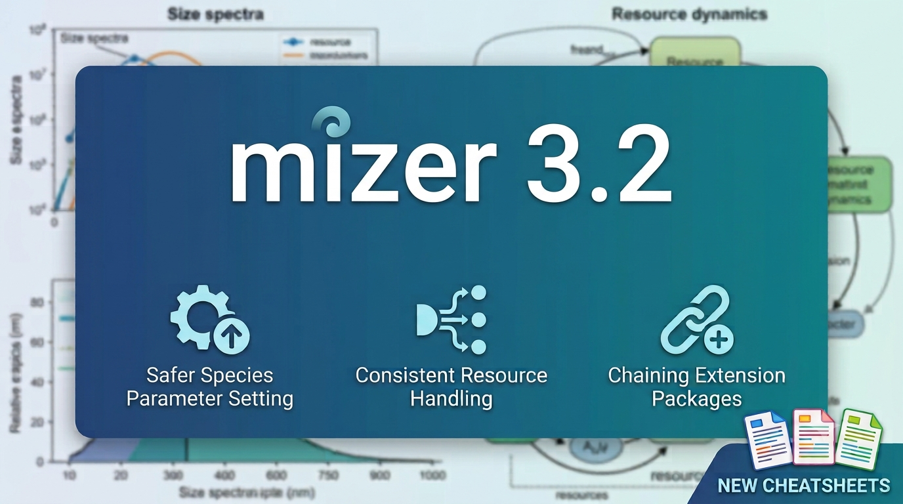

Announcing mizer 3.2
A quick follow-up to mizer 3.1 that fixes three things we were not happy to leave standing: species parameter setting could silently fail to protect your changes, the resource-setting functions behaved inconsistently, and a flaw in the extension mechanism prevented two extension packages from being chained together. Along the way 3.2 also brings a handful of new user-friendly features and new cheatsheets.

We released mizer 3.1 only a few weeks ago, so why 3.2 already? Three reasons, and all are the kind of thing that is better fixed sooner than lived with. The first is that setting species parameters had become confusing, with the default setter silently failing to protect user changes from being overwritten. The second is that the functions for setting the background resource had grown inconsistent with each other and with the rest of mizer, in a way that could silently discard your changes. The third is that the extension mechanism had a structural flaw that made it impossible to combine two independently developed extension packages in one model.
Safer species parameter setting
When you change a species parameter in mizer, you want two things to happen: the parameter should be updated, and any dependent parameters or parameter arrays (like the maturity ogive or the maximum intake rate) should be recalculated automatically. You also want mizer to remember that you set this parameter explicitly, so it doesn’t overwrite it with a calculated default later.
Previously, using the standard species_params() setter would update the parameter but bypass the protection mechanism (the given_species_params slot) and fail to trigger a recalculation. Users were instead encouraged to use given_species_params(). However, most existing scripts already used species_params(), and a single use of given_species_params() could unintentionally overwrite everything species_params() had done.
mizer 3.2 fixes this by making species_params() the smart, default setter it was always meant to be. It now automatically detects your changes by comparing them against the existing parameters, records them in given_species_params to protect them, and silently triggers the recalculation of any dependent parameters and rate arrays. This restores expected behaviour and makes species_params() the recommended setter for scripts.
The given_species_params() setter remains as an explicit alternative that is particularly useful during interactive sessions, because it issues warnings if you change a parameter whose effect is overridden by another parameter that has already been given.
Consistent resource setting
mizer’s background resource is described by a few scalar parameters — a carrying-capacity coefficient kappa and exponent lambda, a replenishment rate r_pp and exponent n — from which mizer builds the size-dependent resource_capacity and resource_rate arrays that the dynamics actually use. You can set the model at either level: change a scalar and let mizer rebuild the arrays, or supply an array directly and have it left alone (“frozen”).
The problem was that the different ways of doing this did not agree. Setting species parameters with species_params<- rebuilds the affected species rates from the new values, cleanly and predictably. The resource setters did not follow the same rule. Some of them tried to balance the resource — adjusting the arrays so that the current community stays exactly at its steady state — whether or not you asked for it. As a side effect, editing a rate-side scalar such as r_pp could be silently overwritten by the balancing step, so your change simply vanished. Successive edits could overwrite one another rather than accumulate.
mizer 3.2 makes the resource setters behave like the species setters:
Assigning to
resource_params()rebuilds the size-dependent capacity and rate arrays from the resource parameters, while leaving any array you have set manually (frozen) untouched. It no longer balances.-
Balancing the resource to preserve the steady state is now solely the job of
setResource(). The individual settersresource_rate(),resource_capacity(),resource_level()andresource_dynamics()gained abalanceargument so you can switch it off explicitly, for exampleresource_capacity(params, balance = FALSE) <- my_capacity setResource()no longer silently overwrites a frozen rate or capacity array when it balances. If you have set an array by hand, that array wins and mizer warns you rather than quietly replacing it.
The upshot is that setting a resource parameter now does exactly what setting a species parameter does: it takes effect. If you have code that relied on the old balancing behaviour, the new Upgrading mizer vignette explains what changed and how to adapt.
Extensions that chain in any order
mizer’s real power comes from its extension packages. Each one — mizerReef for coral-reef communities, mizerMR for multiple background resources, and others — registers itself with mizer and contributes its own versions of the rate functions. When you call a generic such as getEncounter(), mizer walks a chain of extensions, letting each one add its contribution via NextMethod().
In principle two extensions that touch different parts of the model should compose: you should be able to run a reef model and give it several background resources. In practice this did not work. Each extension defined its marker class statically as a direct sibling of MizerParams (setClass("mizerReef", contains = "MizerParams"), setClass("mizerMR", contains = "MizerParams")). Two siblings cannot be arranged into a single inheritance chain, so an object could carry one extension or the other, but never both. Whichever you applied second could not sit in the right place in the class hierarchy.
mizer 3.2 removes the static class. An installed extension is now recognised from the S3 methods it registers for its marker class (for example getEncounter.mizerMR), rather than from a statically declared S4 class. This lets mizer build the marker class dynamically when the package is loaded and insert it into the S4 hierarchy at the correct position relative to whatever other extensions are already active — in whichever order they were loaded. The class chain becomes genuinely linear, mizerMR extending mizerReef extending MizerParams (or the reverse, depending on load order), and both sets of methods dispatch correctly.
Here is what that now makes possible. Load both extensions — the one you load last sits at the front of the chain:
Start from mizerReef’s example Caribbean reef model, which has a single background resource plus the reef’s algae and detritus components:
params <- caribbean_3_model
class(params)
#> [1] "mizerReef"Now hand the resource over to mizerMR, splitting the single background spectrum into a small-plankton and a large-plankton pool:
wf <- w_full(params)
resource_params <- data.frame(
resource = c("small plankton", "large plankton"),
kappa = 1e11,
lambda = 2.05,
w_min = c(min(wf), 1),
w_max = c(1, max(params@w)),
r_pp = 4,
n = 2 / 3
)
params <- setMultipleResources(params, resource_params = resource_params)The returned object now belongs to a class that chains both extensions:
class(params)
#> [1] "mizerMR"
is(params, "mizerReef")
#> [1] TRUE
is(params, "mizerMR")
#> [1] TRUEclass() reports the most-derived class, but the object still inherits from mizerReef, so reef generics and multiple-resource generics both dispatch. You can give each species its own preference for each resource, retune with mizerReef’s mizerReef::reefSteady() — which is blissfully unaware that the background is now several resources, because mizerMR handles that further down the chain — and plot the combined model with a single plotSpectra() call:
params <- reefSteady(params)
plotSpectra(params, power = 2)Neither package needs to know the other exists; they only need to be polite about calling NextMethod(). The full worked example, including different per-species resource preferences, is in mizerReef’s Combining mizerReef with mizerMR vignette, and the mechanics of the chain are described in vignette("using-extension-packages", package = "mizer").
Also in 3.2
While the three fixes above were the reason for the release, 3.2 also gathers up a number of improvements:
adjustSizeGrid()adjusts the size grid of a model to a new minimum and/or maximum size. It can both expand and truncate the grid, warning if it would discard non-negligible abundance.project()gains acallbackargument, letting you run your own function at each saved time step.Nicer output. Printing a rate array (as returned by
getEncounter(),getBiomass(),getFMort(),NResource()and friends) now shows the actual values, truncated to fit the console, instead of a per-species min/mean/max summary. Columns accessed with$on aspecies_paramsorgear_paramsobject come back named by species, so you can tell the entries apart.Fewer surprises with gears. Setting
sel_funcon agear_paramsobject now automatically adds the argument columns that selectivity function needs asNAcolumns, ready to fill in.plotYieldGear()gained thelog_x,log_yandlogarguments to matchplotYield().Typo protection. Misspelled column names in
species_paramsorgear_params—sel_funinstead ofsel_func, say — are now caught by fuzzy matching against the recognised parameter names and trigger a warning suggesting the correct one, instead of silently being ignored.Three new cheatsheets — Model Setup and Calibration, Changing Model Parameters and Fishing — join the Analysis and Plotting cheatsheet, which now covers the newer plotting functions.
For the complete list of changes see the changelog.
Upgrading
install.packages("mizer")Existing MizerParams and MizerSim objects are upgraded automatically when you load them with readParams() or readSim(). Any changes that may affect existing scripts are described in the Upgrading mizer vignette.
As always, we welcome bug reports and feature requests on GitHub.